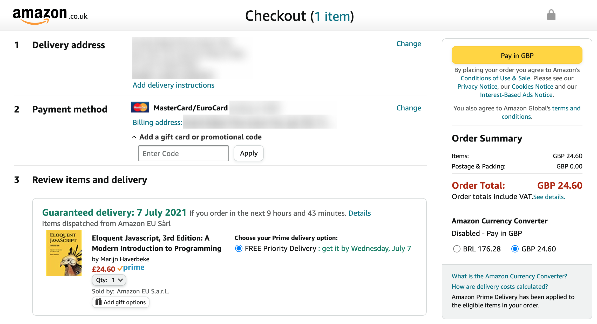
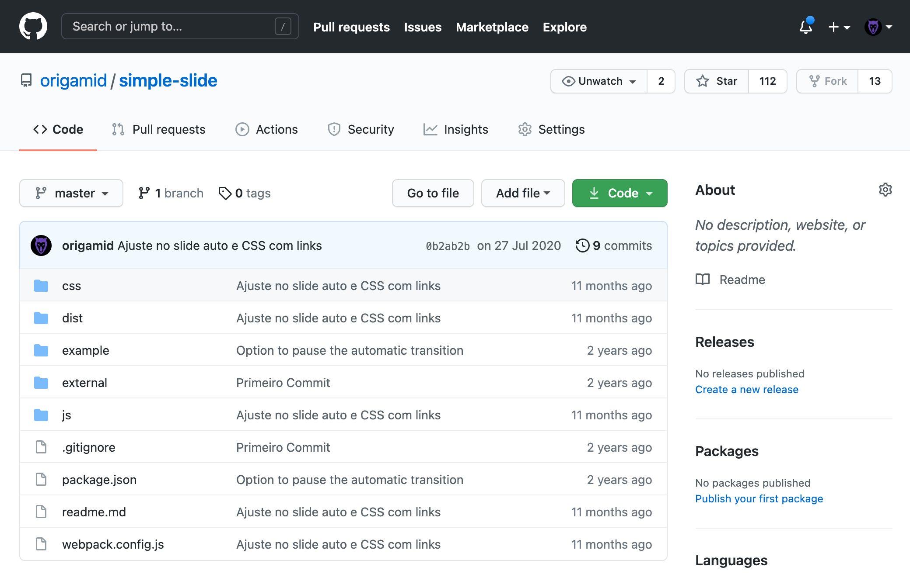
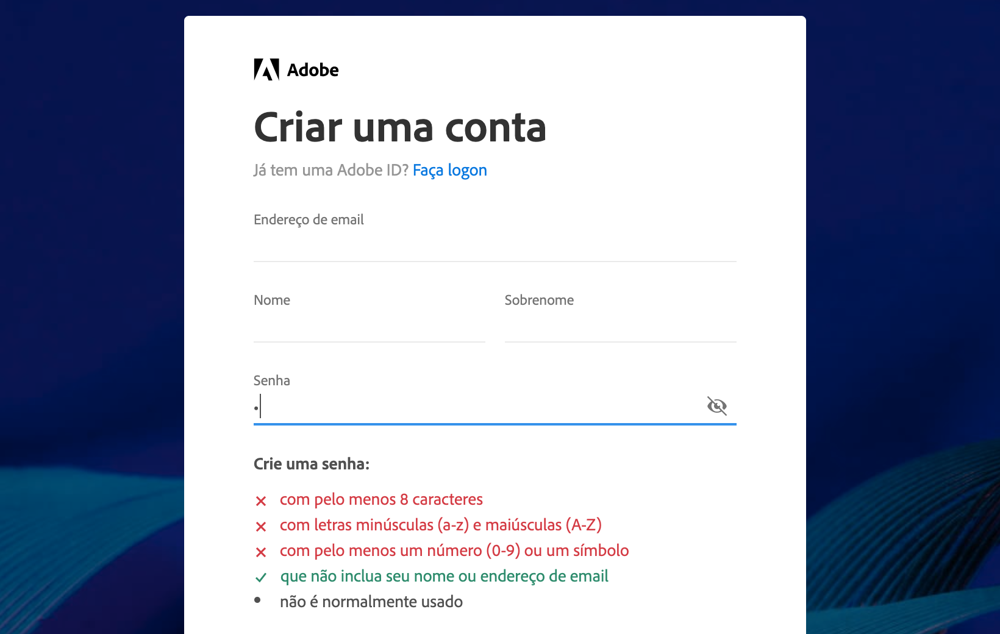
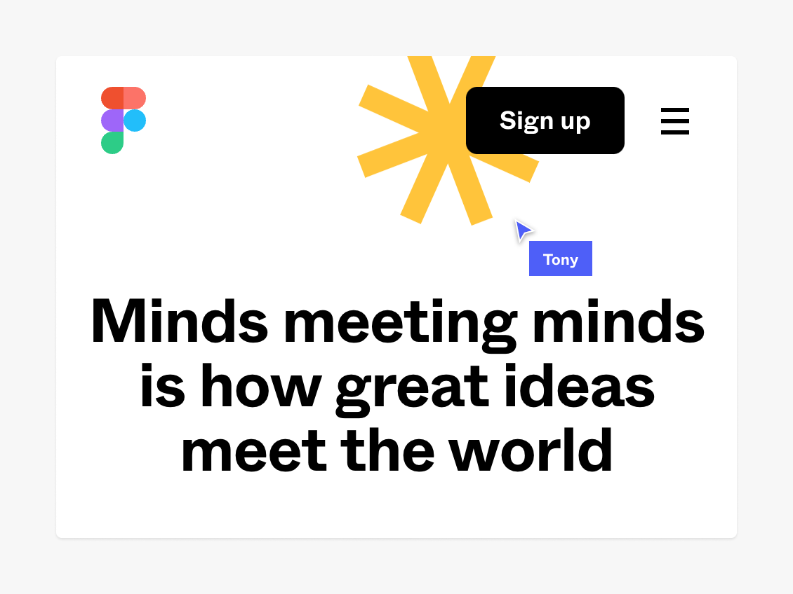
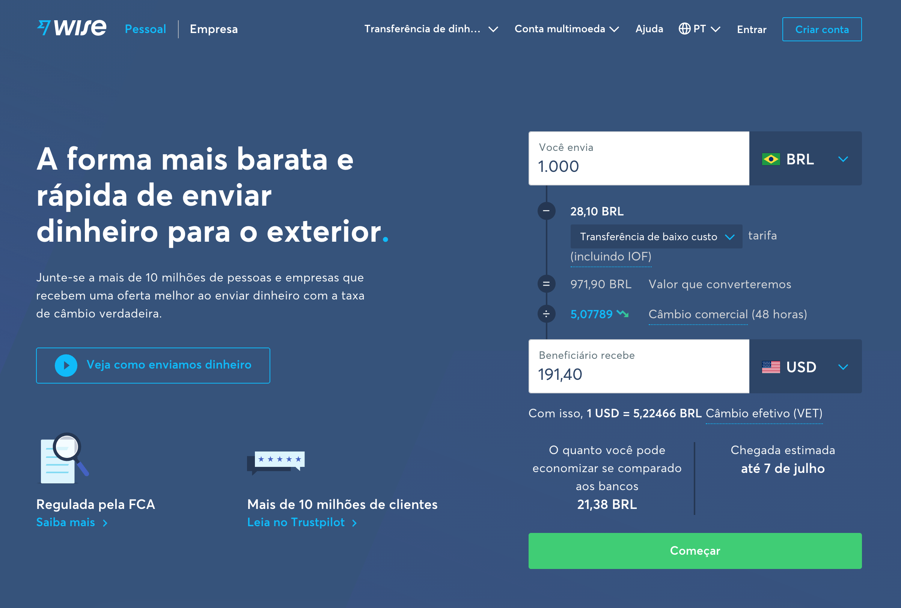
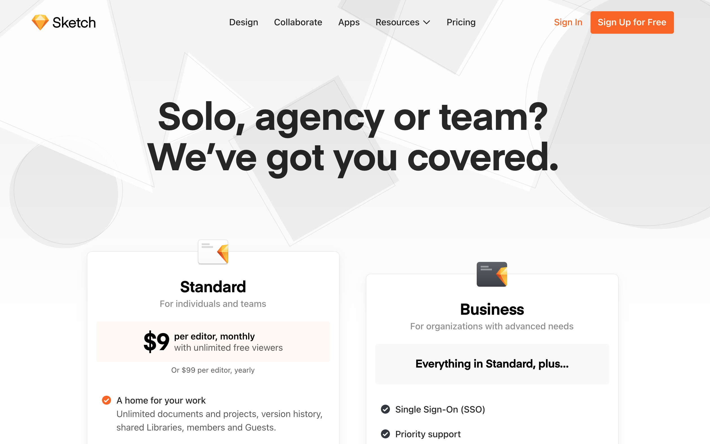

UX Design
Heurísticas
Heurísticas
Regras "geralmente" testadas em diferentes projetos que provaram ser efetivas.
10 Heurísticas de usabilidade de Jakob Nielsen
UX Design Heurísticas
Controle/Liberdade
Dê liberdade ao usuário para reparar/modificar as suas ações.

A Amazon permite modificarmos qualquer informação (entrega, cobrança, itens adicionados) no momento final da compra.
Consistência
Uma interface consistente é mais simples de ser aprendida.

O Github utiliza a mesma seta em todos os botões que possuem um menu dropdown. O uso de ícones de pastas para indicar diretórios dentro do repositório garante consistência entre interface do site e do sistema.
Prevenir Erros
Prevenir que os usuários cometam erros com instruções claras e confirmações para ações importantes.

https://creativecloud.adobe.com/pt
A Adobe previne que o usuário crie uma senha fraca indicando exatamente as regras que devem ser seguidas para garantir uma senha forte.
Visibilidade
O que estiver visível será mais utilizado do que o que estiver escondido.

Estudo sobre a eficácia de botões hamburgers (navegação escondida).
Engajamento Gradual
Pedir as informações gradualmente para o usuário, ao invés de pedir tudo de uma vez.

O Wise pede por etapas as informações necessárias para fazer uma transferência.
Opções
Quanto menos opções, maior a chance do usuário adquirir o produto.

https://www.sketch.com/pricing/
Barry Schwartz fala sobre dois possíveis efeitos negativos: paralisia por análise e remorso de compra.